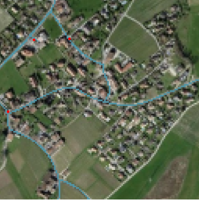

<mat-card class="result">
  <mat-card-title class="result__title" i18n>So haben Sie abgeschnitten:</mat-card-title>
  <mat-card-content class="result__content">
    <div class="result__content-summary">
      <div i18n>Ihre Punktzahl: {{score.human}}</div>
      <div i18n>Punkte Algorithmus: {{score.bot}}</div>
      <div i18n>Sind Sie überrascht, dass der Algorithmustendenziell genauer war als Sie? Möchten Sie diese Erfahrung teilen?</div>
      <button mat-raised-button></button>
    </div>
    <div>Übersicht Ihrer Resultate:</div>
    <mat-divider class="result__divider"></mat-divider>
    <div class="result__content-score"
          *ngFor="let number of [1,2,3,4,5]">
      <div class="result__content-score-card">
        <div>
          <div i18n>Ihre Punktzahl: {{score.human}}</div>
          <div i18n>Punkte Algorithmus: {{score.bot}}</div>
        </div>
        
      </div>
      <mat-divider class="result__divider"></mat-divider>
    </div>
  </mat-card-content>
  <mat-card-actions class="result__actions">
    <a href="https://www.betterask.erni" target="_blank">Wollen Sie mehr zu dieser Challenge erfahren?</a>
    <button mat-raised-button i18n class="result__actions-reset"
            (click)="reset()">Wiederholen</button>
  </mat-card-actions>
</mat-card>
